1홈 화면에 앱 아이콘 만들기
받은 설치 링크를 누르면 앱이 알아서 설치 방법을 보여 줘요. 홈 화면에 아이콘이 생기면 앱처럼 바로 열리고, 볼링장 와이파이가 끊겨도 열려요.
설치 링크: sunboys20.github.io/bowling-diary/?install=1
안드로이드 (크롬·삼성 인터넷)위쪽 앱으로 설치 단추 → 설치. 단추가 없으면 메뉴 ⋮(삼성은 아래 ≡) → 홈 화면에 추가
아이폰 (사파리)안내 그림의 화살표대로 아래쪽 공유 → 홈 화면에 추가 → 추가
카톡에서 링크를 눌렀다면 — 카톡 안에서는 설치가 안 되고 기록도 따로 저장돼요. 나오는 크롬으로 열기(아이폰은 사파리로 열기)를 먼저 눌러 주세요.
맨 위 머리글을 보세요 — 지금 누구의 기록인지(이름)와 어디에 저장되는지(이 휴대폰에만 / 로그인한 이메일 · 서버에도)가 늘 나와요.
로그인하지 않으면 기록은 이 휴대폰 안에만 있어요. 늘 같은 아이콘으로 여세요.
2내 이름 정하고 고르기
- 처음엔 "사용자1~6"이 있어요. 아래 탭 설정의 사용자 이름 칸을 누르면 빈칸이 돼요. 내 이름을 쓰고 이름 저장
- 한 휴대폰을 가족이 같이 쓰면 이름을 여러 개 넣어요. 사람마다 기록·볼·통계가 따로예요.
- 맨 위 이름 ▾를 누르면 "누가 쓰나요?" 화면이 나와요. 내 이름을 눌러요.
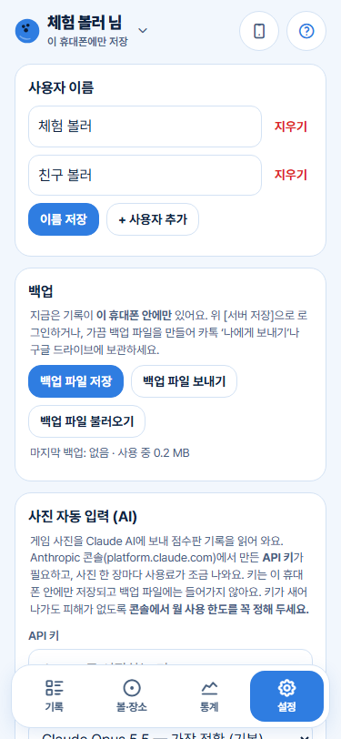
2내 이름 고르기 (이어서)
파란 테두리가 지금 고른 사람이에요. 다른 사람으로 바꿀 때도 맨 위 이름을 눌러요.
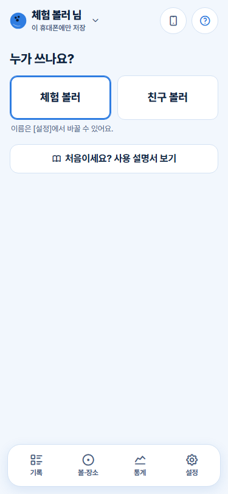
3서버 저장 (로그인)
로그인해 두면 기록이 서버에도 저장돼서 휴대폰을 바꾸거나 잃어버려도 남아요. 비밀번호는 없어요. 필요한 건 이메일 주소와 모임에서 받은 초대 코드예요.
- 설정 맨 위 서버 저장에 이메일을 넣고 번호 받기
- 메일로 온 숫자 번호를 넣고 로그인 (메일이 안 보이면 스팸함도 보세요. 메일 속 링크는 누르지 않아요)
- 처음 한 번 초대 코드를 넣고 가입하기
- 저장 방식에서 서버에도를 골라요. 이 휴대폰의 기록이 서버로 올라가요.
다른 휴대폰·PC에서 — 같은 이메일로 로그인하고 서버에도를 고르면 같은 기록이 보여요. 볼링장에서 인터넷이 끊겨도 먼저 휴대폰에 저장되고, 연결되면 알아서 올라가요.
같이 쓰는 기기라면 — 로그아웃할 때 "이 기기 기록과 AI 키도 지울까요?"에서 확인을 누르세요. 서버의 기록은 그대로예요.
같이 쓰는 기기라면 — 로그아웃할 때 "이 기기 기록과 AI 키도 지울까요?"에서 확인을 누르세요. 서버의 기록은 그대로예요.
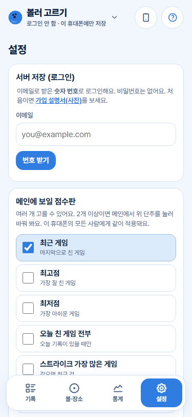
4내 볼 · 볼링장 등록
- 아래 탭 볼·장소 → 내 볼 → + 볼 추가. 이름·무게(파운드)·원핸드/투핸드를 넣고 저장
- 볼링장 탭 → + 장소 추가. 자주 가는 곳과 메모(레인 수, 오일 등)를 넣어요. 일지에 처음 쓴 볼링장도 자동으로 들어와요.
- 볼마다·볼링장마다 평균·최고·게임 수, 볼링장은 잘 맞는 레인(3게임 이상 친 레인 중 평균이 가장 높은 곳)이 나와요.
팁 — 안 쓰는 볼은 지우지 말고 "지금 쓰는 볼"을 꺼 두세요(쉬는 중). 볼링장 이름을 고치면 지난 일지에도 같이 바뀌어요.
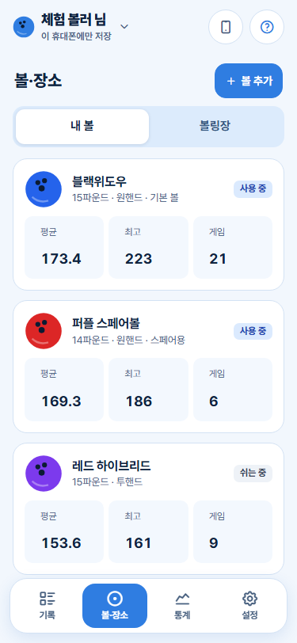
5연습일지 쓰기
- 메인에서 + 오늘 일지를 눌러요.
- 맨 위에서 무슨 볼링이었는지 골라요: 대회 개인연습 단체연습 기타. 대회면 대회 이름 칸이 나와요.
- 날짜·레인·볼링장·오늘 볼을 넣어요. 볼링장 칸을 누르면 등록한 곳이 목록으로 나와요.
사진으로 바로 시작 — 메인의 사진으로를 누르고 볼링장 점수판 사진을 고르면 새 일지가 열려요. AI 키가 있으면 점수판을 자동으로 채워요.
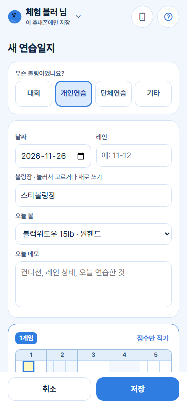
6점수판 입력
- 공마다 넘어뜨린 핀 수를 눌러요. X 스트라이크, / 스페어, - 0개. 지금 넣을 칸은 노란색이에요.
- 첫 공 뒤 스플릿이었으면 바로 스플릿. 점수판 숫자에 보라색 동그라미가 생겨요.
- 잘못 눌렀으면 ⌫ 한 칸 지우기
- 점수·스트라이크·스플릿·오픈은 자동 계산. 다 치면 아래 저장
점수만 적고 싶을 때 — 게임 오른쪽 위 점수만 적기.
점수판 사진 — 점수판 사진 넣기로 찍어 두면 사진 모아보기와 기록지에 같이 나와요.
점수판 사진 — 점수판 사진 넣기로 찍어 두면 사진 모아보기와 기록지에 같이 나와요.
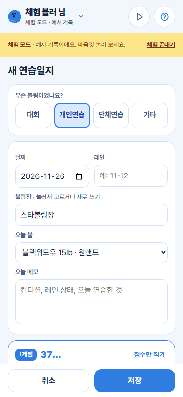
7중간 점수 고치기
볼링장 화면 점수와 앱 점수가 다를 때 누적 점수를 직접 고쳐요.
- 점수판에서 프레임 아래쪽 누적 점수를 눌러요.
- 노란 상자에 맞는 점수를 넣고 적용
- 고친 칸은 노란색 ✎로 표시되고, 뒤 프레임도 같은 만큼 바뀌어요. 되돌리려면 다시 눌러 계산값으로
팁 — 10프레임을 고치면 그게 그 게임 점수가 돼요. 평균·통계에도 고친 점수가 들어가요.
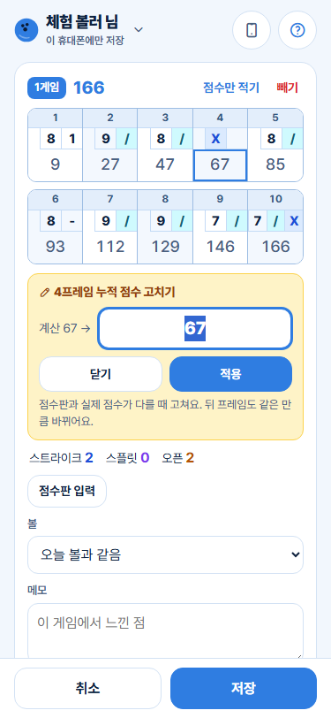
8메인 화면 보기
- 원 안에 이번 달 평균, 옆에 최고·게임 수·지난달보다 몇 점 올랐는지 나와요.
- 그 아래 점수판이 바로 보여요. 단추(최근 게임 11월 최고 …)를 누르면 다른 게임으로 바뀌고, 점수판을 누르면 그날 일지로 가요.
- 더 아래에 날짜별 기록이 쌓여요. 종류(대회·개인연습…)가 색 이름표로 붙어요.
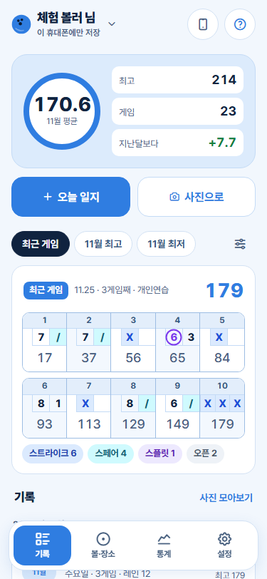
9메인 점수판 고르기
- 설정 › 메인에 보일 점수판에서 보고 싶은 것을 체크해요. 여러 개 고를 수 있어요.
- 최근 게임 · 최고점 · 최저점 · 오늘 친 게임 전부 · 스트라이크 가장 많은 게임 · 오픈 없는 게임(클린)
- 아래 기간(이번 달 / 최근 3달 / 전체)으로 최고·최저를 어디서 고를지 정해요.
팁 — 메인 점수판 오른쪽 을 눌러도 이 설정으로 와요.
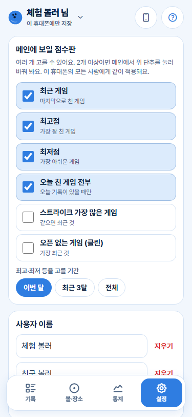
10하루 일지 · 인쇄
- 저장하거나 날짜 카드를 누르면 그날 일지가 나와요. 평균·최고·합계와 게임마다 점수판이 보여요.
- 고칠 게 있으면 오른쪽 위 고치기
- 아래 인쇄 · PDF 저장을 누르면 A4 기록지로 인쇄돼요. 프린터를 PDF로 저장으로 고르면 파일로 남아요.
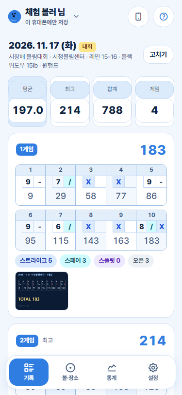
11사진 모아보기
- 메인의 기록 목록 위 사진 모아보기를 눌러요.
- 넣은 점수판 사진이 날짜·점수와 함께 모여요. 위 단추로 대회 · 개인연습 · 단체연습 · 기타만 골라 볼 수 있어요.
- 사진을 누르면 그날 일지로 가요.
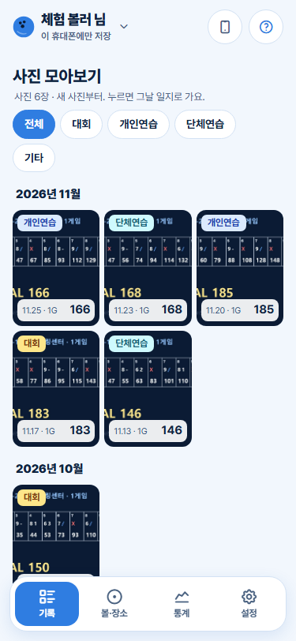
12백업과 사진 AI (선택)
- 백업 — 설정 › 백업 파일 저장. 서버에 로그인하지 않았다면 한 달에 한 번쯤 만들어 카톡 '나에게 보내기'나 구글 드라이브에 두세요. 휴대폰을 바꾸면 백업 파일 불러오기.
- 사진 AI 자동 입력 — Anthropic 콘솔에서 만든 API 키를 설정 › 사진 자동 입력 (AI)에 넣으면, 점수판 사진으로 점수판을 자동으로 채워요. 사진 한 장마다 사용료가 조금 나와요(기본 모델 Haiku는 싸고 빨라요. 잘 못 읽으면 설정에서 Opus로 바꿔요). 콘솔에서 월 사용 한도를 꼭 정해 두세요. 키가 없어도 다른 기능은 모두 돼요.
AI가 읽은 뒤 — 앱이 계산한 누적 점수와 사진의 누적 점수가 다르면 그 칸이 빨갛게 나와요. 사진과 비교해 고치세요.
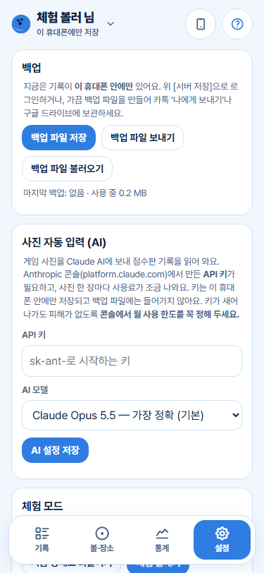